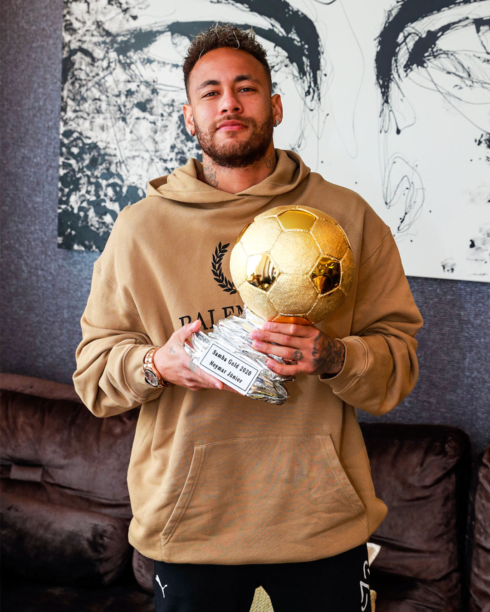
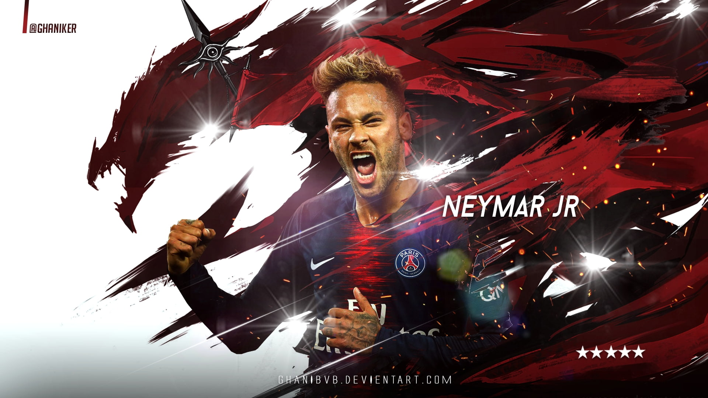

News
WHAT WERE NEYMAR JR.’S HIGHLIGHTS OF 2021?
- Retrospective
- It’s time to remember memorable facts from Neymar Jr. in sports on 2021. A tribute, breaking a record with Brazil National Team, awards, a title... Did you enjoy it? We’re hoping for an even better 2022!
2021 (PSG + Brazilian National Team)
- 46 GAMES
- 17 GOALS
- 18 ASSISTS
- 2 TITLES (Trophée des champions + Coupe de France)

Neymar da Silva Santos Júnior (born 5 February 1992), also known as Neymar Júnior, is a Brazilian professional footballer who plays as a attacking midfielder for Saudi Pro League club Al Hilal and the Brazil national team. Regarded as one of the greatest players in his generation, he is renowned for his flamboyant style of play, passing abilities, and two-footedness.[3][4][5][6][7] Neymar has scored at least 100 goals for three different clubs, being one of a few players to do so,[8] and is the highest-scoring Brazilian player in Champions League history.[9] Neymar is also the all-time top goalscorer of the Brazil national football team.[10] Neymar made his professional debut with Santos in 2009, and in 2011, he helped them win their first Copa Libertadores in nearly 50 years.[11] In 2013, he joined Barcelona and became part of an attacking trio with Lionel Messi and Luis Suárez, dubbed MSN. Winning the continental treble of La Liga, the Copa del Rey, and the UEFA Champions League in the trio's first season, Neymar was the joint-top scorer of the Champions League campaign and top scorer in the Copa del Rey. Neymar joined Paris Saint-Germain (PSG) in 2017 in a transfer costing €222 million, making him the most expensive player ever.[note 1][14] There, he won Ligue 1 Player of the Year, won five Ligue 1 titles, and was integral to PSG being runners-up in the 2019-20 Champions League. He also ranks as PSG's fourth-highest all-time top goalscorer, despite reoccurring injuries consistently disrupting his playing time. In 2023, he became the most expensive signing in Saudi Pro League history, costing €90 million, as he signed for Al Hilal. Debuting for Brazil aged 18, Neymar is the nation's all-time top goalscorer, with 79 goals in 128 matches. He won the 2013 FIFA Confederations Cup, winning the Golden Ball. In the 2014 FIFA World Cup, he was named in the Dream Team. He captained Brazil to their first Olympic gold medal in men's football at the 2016 Summer Olympics, having already achieving a silver medal at the 2012 edition. Helping Brazil to a runner-up finish at the 2021 Copa América, he was jointly awarded Best Player. In the 2022 World Cup, he became the third Brazilian player to score in three World Cups, after Pelé and Ronaldo. Neymar has won a record six Samba Gold awards. Neymar has been named in the FIFA FIFPro World11 and the UEFA Team of the Year twice and the UEFA Champions League Squad of the Season three times. He finished third for the FIFA Ballon d'Or in 2015 and 2017 and won the FIFA Puskás Award in 2011. SportsPro named Neymar the world's most marketable athlete in 2012 and 2013, and ESPN cited him as the world's fourth-most-famous athlete in 2016. In 2017, Time included him in its annual list of the 100 most influential people in the world.[15] France Football ranked Neymar the world's third-highest-paid footballer of 2018. Forbes ranked him the world's third-highest-paid athlete of 2019,[16] dropping to fourth in 2020.[17]
Barcelona
On 24 May 2013, Santos announced that they had received two offers for Neymar. The following day, Neymar announced he would sign with Barcelona on 27 May and join the team after playing in the 2013 FIFA Confederations Cup. Neither Neymar nor the clubs released details on the transfer fee or personal terms, save to say he signed a five-year deal.[74] On 3 June, Neymar was unveiled by Barcelona after passing medical tests and signing a contract that would keep him at the club through June 2018.[75] Neymar was presented at the Camp Nou in front of 56,500 fans, a record turnout for a Brazilian player.[76] Club vice-president Josep Maria Bartomeu initially said Neymar's transfer fee was €57.1 million and his release clause set at €190 million.[77][78] Barcelona's doctor suggested he might need to gain weight to be able to cope physically in Spanish football.[79] Transfer investigation In January 2014, the prosecutor's office in Madrid began investigating the transfer fee that Barcelona paid for Neymar.[80] The documents submitted to the authorities on request contained contradictory information.[80] On 23 January 2014, Rosell resigned from his position as president.[81] A day later, the details of the transfer were revealed by Barcelona; the transfer had in fact cost them €86.2 million (£71.5 million),[82][83][84] with Neymar's parents confirmed to have received a €40 million sum.[85][86] In the aftermath, Barcelona and Bartomeu were charged with tax fraud.[87] 2013–14: Adapting to Spain On 30 July 2013, Barcelona drew 2–2 against Lechia Gdańsk in a pre-season friendly; Neymar made his unofficial debut when he came on as a substitute.[88] He scored his first goal for the club in a 7–1 win against a Thailand XI on 7 August at the Rajamangala National Stadium.[89] Neymar made his competitive debut for Barcelona during the opening game of the 2013–14 La Liga season as a 63rd-minute substitute for Alexis Sánchez in a 7–0 win against Levante.[90] On 21 August, he scored his first competitive goal for the club in the first leg of the 2013 Supercopa de España against Atlético Madrid: seven minutes after coming on as a substitute for Pedro, he headed Dani Alves' cross to equalise in a 1–1 draw at the Vicente Calderón Stadium as Barcelona won on the away goals rule for his first trophy at the club.[91] On 18 September, he made his UEFA Champions League debut, assisting a Gerard Piqué goal as Barça beat Ajax 4–0 in their opening match of the 2013–14 tournament. Six days later, Neymar scored his first goal in La Liga in Barcelona's 4–1 defeat of Real Sociedad at Camp Nou.[92] On 26 October, he made his first El Clásico appearance, scoring the opening goal and assisting the team's winning goal scored by Alexis Sánchez as Barcelona beat Real Madrid 2–1 at Camp Nou.[93] On 11 December, Neymar recorded his first three Champions League goals as he scored a hat-trick in a 6–1 win over Celtic in Barcelona's final Group H match.
